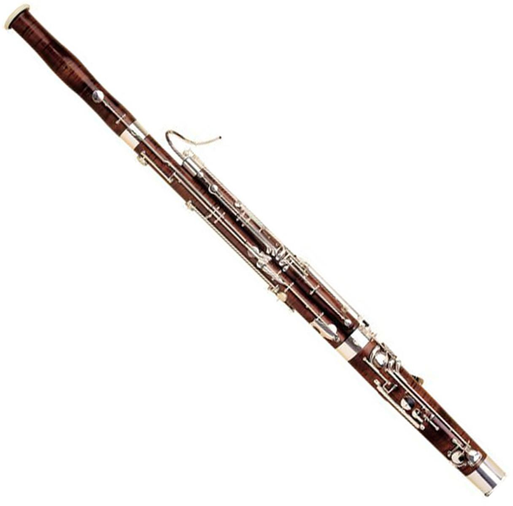

Bassoon Website
The bassoon is a woodwind instrument in the double reed family that typically plays music written in the bass and tenor clefs, and occasionally the treble. Appearing in its modern form in the 19th century, the bassoon figures prominently in orchestral, concert band, and chamber music literature. The bassoon is a non-transposing instrument known for its distinctive tone color, wide range, variety of character and agility. Listeners often compare its warm, dark, reedy timbre to that of a male baritone voice. Someone who plays the bassoon is called a bassoonist.